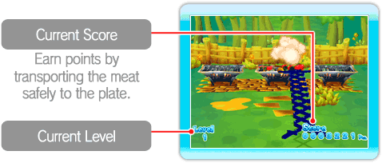
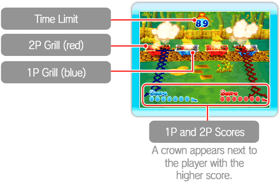
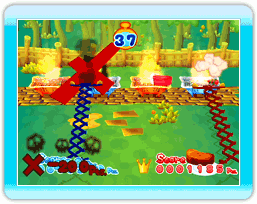

● 1P Mode
It's mouthwatering madness in Grill-off with Ultra Hand! Pieces of meat drop from above onto a hot grill and start to cook. When the meat is ready, maneuver the Ultra Hand to pick up pieces and drop them on the plate in front of you. It's game over if you let the meat burn or if you drop a piece on the ground. There's no time limit in this single-player mode.
*See page 9 for details on how to pick up and transport pieces of meat.
*Press  to bring up the pause menu. From there you can retry a stage or return to the main menu.
to bring up the pause menu. From there you can retry a stage or return to the main menu.

・ Levels
Your level will increase once you pick up enough pieces of meat. With each level increase, pieces of meat drop down onto the grill at a faster pace and cook more quickly. You may even notice some new kinds of meat on your grill!
● VS Mode
Challenge a friend to see who can earn the highest score within the 90-second time limit. In this mode, 1P is in charge of the blue grill and 2P is in charge of the red grill (additional accessories required and are sold separately). Pick up the meat from your grill and transport it to the plate in front of you. You can also pick up the meat from your opponent's grill to steal points from them!

・ Losing Points
You will lose points if you let any meat burn on your grill. You will also lose points if you drop any meat on the ground, so don't lose your grip!